Ratchet diagrams
Sources are .mmd. These SVGs are rendered artifacts; do not edit them by hand.
lifecycle

The main path: task start, checks pass, done. Plus abandon and stranded.
lifecycle-exits

The exits from the live state, and how they return.
architecture-today

Why two threads in one checkout cannot both be the lead.
architecture-target

One thread, one lead, one contract.
pyramid

What is in place, partial, or missing.
hierarchy

Who you talk to, and what wraps all of them.
roadmap

Forecast, not a commitment. No dates.